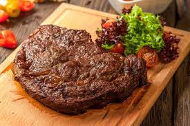
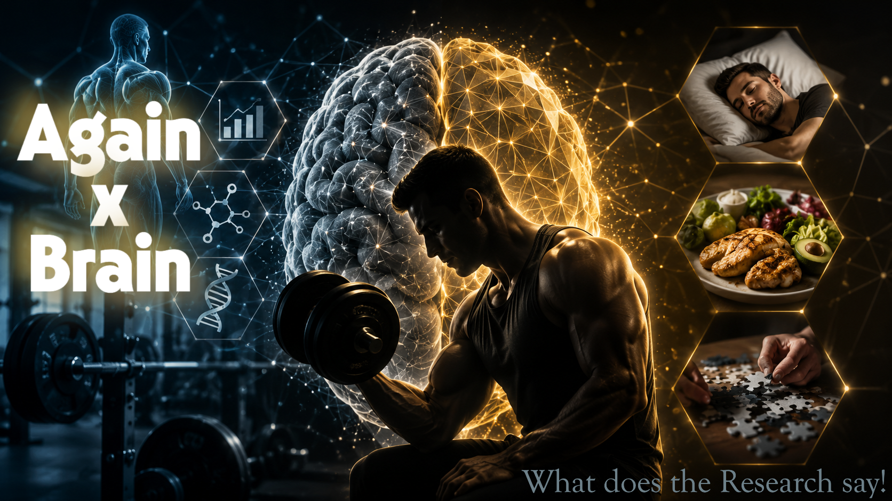

The Physiological Vault
Evidence-based research publications exploring metabolic efficiency, sarcopenia reversal, joint longevity, and systemic athletic performance.
Healthy & Fit After 40 Is NOT About The Fitness
Many believe physical decline after age 40 is dictated by metabolism. The true physiological barrier is consistency, recovery capacity, and intentional mindset engineering.
HEY Over 40: The Biomechanics of Cycling
At age 42, I integrated cycling to build cardiorespiratory endurance without placing heavy impact on my knees and lower back. Discover how low-impact leg drive supports hypertrophy.

BiochemistryCarnivore Facts: Honeymoon vs. Plaque Reality
The carnivore elimination phase drives rapid ketosis and drops systemic inflammation. However, long-term saturated fat overload can downregulate hepatic LDL receptors in lean hyper-responders.
 Neurobiology
Neurobiology
Brain Training Facts: The Muscle-Brain Axis
Trade crossword puzzles for dumbbells. Clinical research proves skeletal muscle acts as an endocrine organ, releasing myokines like BDNF that directly drive hippocampal neurogenesis.
 Metabolism
Metabolism
Metabolic Adaptation During Aggressive Deficits
How comparative physiology explains the downregulation of thyroid hormones (T3/T4) during extended caloric restriction, and how to preserve basal metabolic rate.
Tendon Longevity Under Heavy Compound Loads
Muscular tissue recovers faster than dense collagenous ligaments. Mapping training frequency to connective tissue recovery cycles prevents rupture and joint inflammation.

RecoveryDeep REM Cycles & Glymphatic Brain Cleansing
While resistance training builds cognitive reserve, deep slow-wave sleep powers the literal metabolic dishwasher that clears toxic beta-amyloid proteins.
Micronutrient Gaps in Aggressive Diets
Analyzing folate, calcium, and magnesium retention when eliminating plant fibers. Why organ meats like beef liver are non-negotiable for biochemical equilibrium.